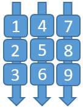

Object collection (オブジェクトコレクション)

Object collection はオブジェクトの列を事前定義された三次元形状にレイアウトすることを助けるスクリプトです。これは、平面、円柱、球、放射状を含む、さまざまな面タイプをサポートしています。Unity のすべてのオブジェクトをサポートしているため、2D オブジェクトと 3D オブジェクトの両方のレイアウトに利用可能です。
Object collection のスクリプト
GridObjectCollectionは、円柱、平面、球、放射状の面タイプをサポートしています。ScatterObjectCollectionは、点在するスタイルのコレクションをサポートしています。TileGridObjectCollectionは、GridObjectCollection にいくつかの追加オプションを提供しています。 注意: TileGridObjectCollection はGridObjectCollectionを拡張しておらず、いくつかのバグがあります (issue 6237 をご覧ください)。そのため、GridObjectCollectionを使うことが推奨されます。
 Grid Object Collection - Cylinder Grid Object Collection - Cylinder |
 Grid Object Collection - Sphere Grid Object Collection - Sphere |
|---|---|
 Grid Object Collection - Radial Grid Object Collection - Radial |
 Grid Object Collection - Plane Grid Object Collection - Plane |
 Scattered Object Collection Scattered Object Collection |
 Tile Grid Object Collection Tile Grid Object Collection |
Object collection の使い方
コレクションを作るためには、空のゲームオブジェクトを作り、それに Object collection スクリプトの1つをアサインします。 いかなるオブジェクトでも、このゲームオブジェクトの子供として追加できます。子オブジェクトの追加が終わったら、[Inspector] (インスペクター) パネルで Update Collection ボタンをクリックし、Object collection を生成します。オブジェクトはコレクションのパラメーターにしたがって、シーンにレイアウトされます。Update Collection は、コードからもアクセスできます。

GridObjectCollection の中身のアラインメント
GridObjectCollection の中身はアラインすることができ、親オブジェクトはコレクションの top/middle/bottom と left/center/right に固定されます。中身のアラインメントを指定するには anchor プロパティを使用してください。
GridObjectCollection のレイアウト順序
子要素がレイアウトされる行、列の順序を指定するには、Layout フィールドを使用してください。
Column Then Row - 子要素はまず横に (列に) レイアウトされ、それから縦に (行に) レイアウトされます。Num Columns (またはコードでは Columns プロパティ) を使って、グリッドの列の数を指定してください。

Row Then Column - 子要素はまず縦に (行に) レイアウトされ、それから横に (列に) レイアウトされます。Num Rows (またはコードでは Rows プロパティ) を使って、グリッドの行の数を指定してください。

Horizontal - 子要素は列だけを使い、1つの行にレイアウトされます。
Vertical - 子要素は行だけを使い、1つの列にレイアウトされます。
Object collection のサンプル
ObjectCollectionExamples.unity のサンプル シーンには、Object collection のさまざまなタイプの例が含まれています。
Periodic table of the elements は、Object collection がどのように動くかをデモンストレーションするサンプル アプリです。 3D の原子の箱を異なる形状にレイアウトするために、Object collection を使っています。
Object collection のタイプ
3D オブジェクト Object collection は、インポートされた 3D オブジェクトのレイアウトに利用可能です。以下の例は、Object collection を使った 3D の椅子モデル オブジェクトの平面レイアウトと円柱状のレイアウトを示しています。

2D オブジェクト
Object collection は 2D 画像からも作ることができます。例えば、複数の画像をグリッド上に配置することができます。